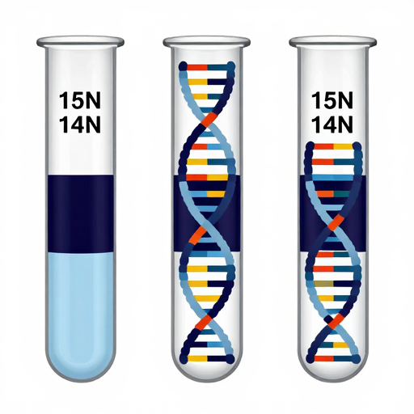

Matthew Meselson and Franklin Stahl designed a brilliant experiment in 1958. They grew *E. coli* bacteria in a medium with a heavy isotope of nitrogen ($^{15}$N), making their DNA heavy.
Then, they moved the bacteria to a medium with normal, lighter nitrogen ($^{14}$N). After one and then two generations, they checked the density of the DNA.
The results perfectly matched the semi-conservative model: first, a hybrid band of medium density, then both a hybrid and a light band. A true "Aha!" moment in science!
